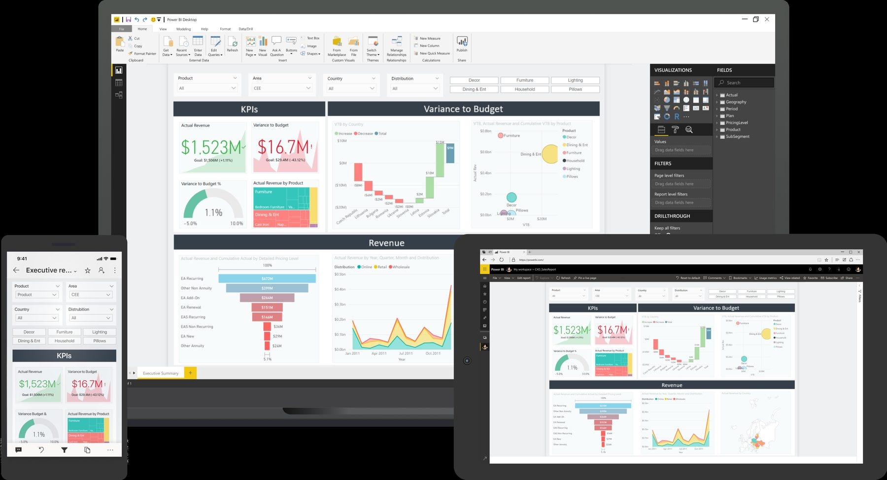
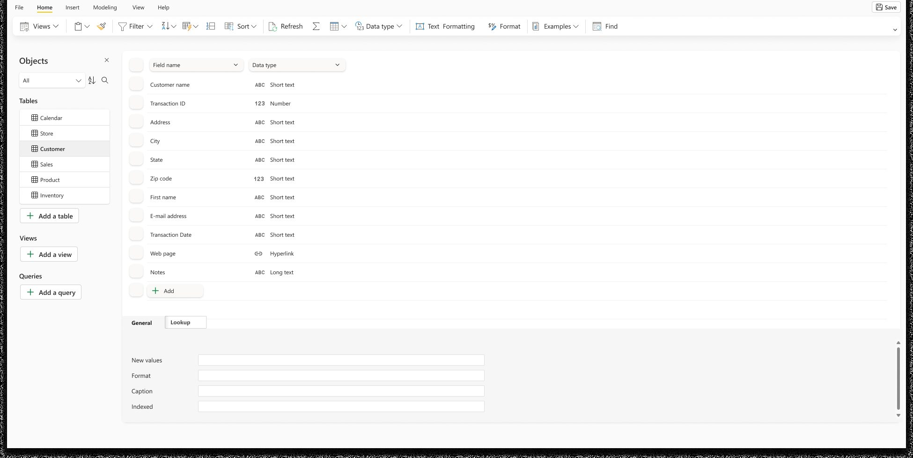

Accelerating a leader
Power BI was the market leader and slowing. Satisfaction rose more than 40%, and the work revealed the product's two audiences.
The context
Power BI led its market, but satisfaction and growth in new users were slowing. Too many people opened it and left before doing anything useful. It was like opening a music app and never playing a song.
Habituation
People dislike change even when it's better. A new interface dips before it rises, so we judged changes at four to eight weeks against the expected adaptation curve instead of a two-week snapshot.


The two-week numbers said roll it back. We waited for people to get used to it again, the curve turned at about a month, and that design is how apps work in Power BI today.
Two audiences
Soon after I came back to Power BI, I visited our team in Israel. They were about to ship deployment pipelines: dev, test, and production for your reports. Critical for developers. But most of our users weren't developers. They made reports. They'd click it and have no idea why it was there.
So the team tried rules: only show it to workspace admins. But everyone had workspaces. And creating a team in Microsoft Teams quietly created a Power BI workspace too, which turned on the developer tools. Starting a Teams channel was enough to put developer tooling in front of someone who just wanted a report.
We weren't failing them with bad features. We were burying them in features meant for someone else.
Then the data lined up. People came into Power BI and left without opening anything, and most of them were consumers. We weren't failing them with bad features. We were burying them in features meant for someone else.
That's when it clicked: we were serving two different people with one product. Instead of writing smarter rules about who sees what, give each their own environment: a clean one for consumers, and a powerful one for developers. That developer side is what became Fabric.
Adjacent markets
We moved into nearby markets. We shipped Datamarts, a simple way for business users to build their own data warehouse. We mapped the user journey with the product manager and customers. Then a design lead and I did the structure, interactions and pixels ourselves. On Scorecards, a way to track goals and key metrics, my job was to pull the team back to the main goal when we'd lost the thread.
